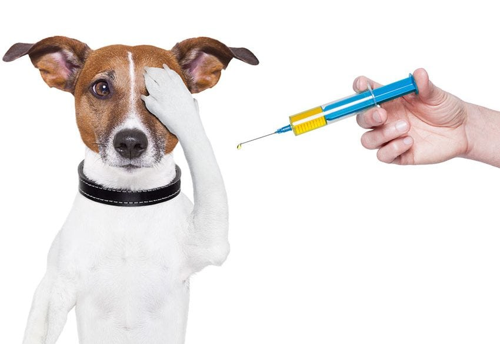

Vacunación
Calendario de vacunas para cachorros y gatitos
Las primeras semanas de vida son decisivas para la salud de tu mascota. Durante ese período, el sistema inmune de cachorros y gatitos todavía se está formando, por lo que un plan de vacunación bien llevado marca la diferencia entre prevenir una enfermedad grave o tener que tratarla más adelante.
¿Por qué se aplican varias dosis?
Los cachorros reciben anticuerpos de su madre a través de la leche materna, pero esa protección va disminuyendo con el tiempo y en un momento distinto para cada animal. Por eso las vacunas se aplican en dosis repetidas: si una primera dosis coincide con el período en que aún quedan anticuerpos maternos, es posible que no genere protección completa, y la siguiente dosis viene a cubrir ese margen.
Calendario general
- 6 a 8 semanas: primera dosis de vacuna múltiple (óctuple en perros, triple o cuádruple felina en gatos).
- 10 a 12 semanas: segunda dosis de la vacuna múltiple.
- 14 a 16 semanas: tercera dosis de la vacuna múltiple y primera dosis antirrábica.
- Refuerzo anual: control y revacunación una vez completado el esquema inicial.
Este calendario es una referencia general: tu médico veterinario puede ajustarlo según la especie, el estado de salud y el nivel de exposición de tu mascota a otros animales.
Recomendaciones antes y después de vacunar
- Lleva a tu mascota sana, sin fiebre ni diarrea, el día de la cita.
- Evita paseos por espacios con muchos animales hasta completar el esquema inicial.
- Es normal un poco de decaimiento o dolor leve en la zona de la inyección durante 24 a 48 horas.
- Consulta de inmediato si notas hinchazón en el rostro, vómitos o dificultad para respirar tras la vacuna.
Si no recuerdas el estado de vacunación de tu mascota o quieres agendar la próxima dosis, puedes revisar nuestro catálogo de servicios o escribirnos para coordinar una hora.